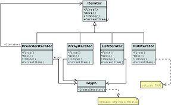
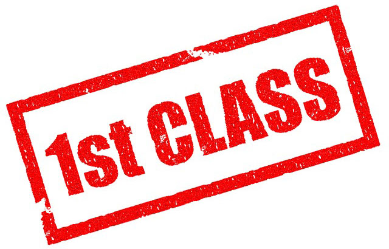
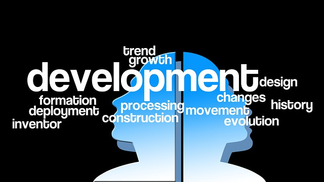
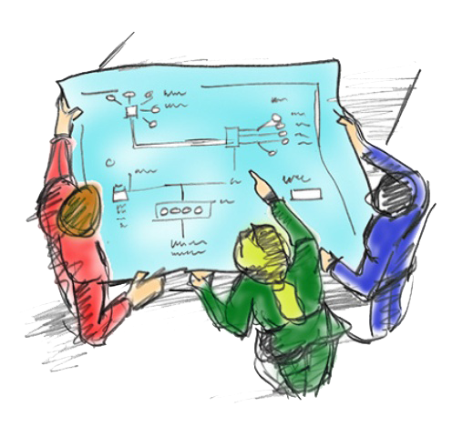

|  |
|
El Lenguaje Unificado de Modelado (UML, por sus siglas en inglés, Unified Modeling Language), como su nombre lo indica permite desarrollar modelos, utilizando para ello esquemas, diagramas y documentación relacionada con el desarrollo de software.
|
|  |
|
|
Temática del Curso |
||||
|---|---|---|---|---|
| 01 |
Evolución del Lenguaje UML Conocer los orígenes del lenguaje, evolución y utilidad. |
02 |
Herramientas y Usos Descripción de las herramientas de modelado y clases de uso. |
|
| 03 |
Casos de Uso Concepto de los casos de uso, utilidad y diagramación. |
04 |
Diagramas de Actividades Utilidad de los diagramas de actividades, qué son, ejemplos. |
INFORMES |
|
|
Oficina de Registro y Matrícula Carrera 27 No. 42-20 Bucaramanga Tel. 057+ 6323232 |